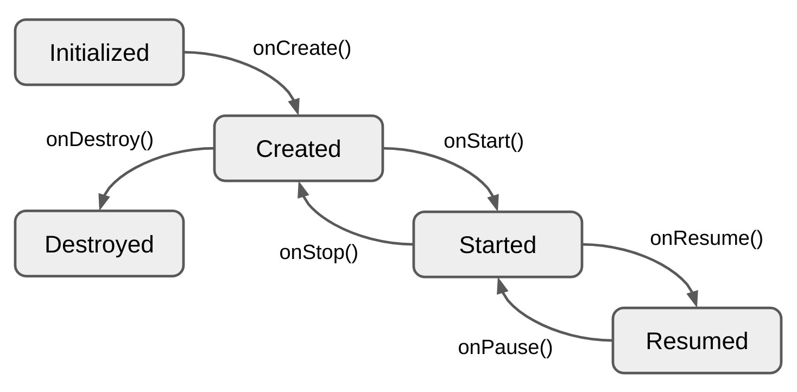

Binding
Connecting inputs and outputs sounds like a simple task, and indeed it is. But it can be even easier if you use Binder. It provides just two methods: start() and stop(). When you call start() it connects (subscribes) outputs with inputs. And when you call stop() it disconnects (unsubscribes).
Creating a Binder
Let's bind our CalculatorStore with CalculatorView which we created earlier.
First of all we will need to map CalculatorStore.State to CalculatorView.Model:
internal val stateToModel: CalculatorStore.State.() -> CalculatorView.Model =
{
CalculatorView.Model(
value = value.toString()
)
}
We also need to map CalculatorView.Event to CalculatorStore.Intent:
internal val eventToIntent: CalculatorView.Event.() -> CalculatorStore.Intent =
{
when (this) {
is CalculatorView.Event.IncrementClicked -> CalculatorStore.Intent.Increment
is CalculatorView.Event.DecrementClicked -> CalculatorStore.Intent.Decrement
}
}
As mentioned earlier you can avoid separate View Models and View Events and just render State and/or produce Intents. In this case you will not need mappers, but you might get extra logic in your Views. In addition your Stores and Views will become coupled.
You can bind outputs with inputs using DSL provided by mvikotlin-extensions-coroutines and mvikotlin-extensions-reaktive modules:
class CalculatorController {
private val store = CalculatorStoreFactory(DefaultStoreFactory).create()
private var binder: Binder? = null
fun onViewCreated(view: CalculatorView) {
binder = bind {
store.states.map(stateToModel) bindTo view
// Use store.labels to bind Labels to a consumer
view.events.map(eventToIntent) bindTo store
}
}
fun onStart() {
binder?.start()
}
fun onStop() {
binder?.stop()
}
fun onViewDestroyed() {
binder = null
}
fun onDestroy() {
store.dispose()
}
}
The controller is supposed to be used by platforms. We are creating the Binder in onViewCreated(CalculatorView) callback which is called by a platform when the CalculatorView is created. The Binder will bind CalculatorStore with CalculatorView in onStart() and will unbind them in onStop().
Same way you can bind any outputs with any inputs. E.g. you can bind Labels of a StoreA with Intents of a StoreB, or View Events with an analytics tracker.
Please note that you must dispose Stores at the end of life cycle. In this example the CalculatorStore is disposed in onDestroy callback.
Lifecycle
MVIKotlin uses Essenty library (from the same author), which provides Lifecycle - a multiplatform abstraction for lifecycle states and events. The Essenty's lifecycle module is used as api dependency, so you don't need to explicitly add it to your project. Please familiarise yourself with Essenty library, especially with the Lifecycle.

Binder + Lifecycle
Work with the Binder can be simplified if you use the Lifecycle. You need to add one of the extension modules in order to use Binder with Lifecycle, either mvikotlin-extensions-reaktive or mvikotlin-extensions-coroutines.
Let's simplify our previous binding example::
class CalculatorController(lifecycle: Lifecycle) {
private val store = CalculatorStoreFactory(DefaultStoreFactory).create()
init {
lifecycle.doOnDestroy(store::dispose)
}
fun onViewCreated(view: CalculatorView, viewLifecycle: Lifecycle) {
bind(viewLifecycle, BinderLifecycleMode.START_STOP) {
store.states.map(stateToModel) bindTo view
// Use store.labels to bind Labels to a consumer
view.events.map(eventToIntent) bindTo store
}
}
}
We passed the viewLifecycle together with the CalculatorView itself and used it for binding. Now Binder will automatically connect endpoints when started and disconnect when stopped.
Same as before we dispose the CalculatorStore at the end of CalculatorController life cycle.
Please refer to the samples for more examples.